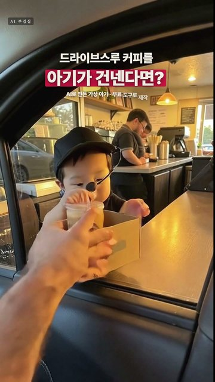

드라이브스루에서 아기 알바생이 차 안으로 딸려 들어오는 10초 영상을 무료 도구로만 다시 만들었습니다. 원작은 힉스필드 Seedance 2.5(유료)로 만든 영상이고, 저희는 아기 사진·첫 장면을 FLUX.2 klein 4B, 영상을 LTX-2.5로 만들었습니다(둘 다 저희 PC, 그래픽카드 8GB). 생성 비용은 0원이고, 아기는 AI로 만든 가상 아기입니다.
① 아기 정면 사진 한 장 ② ①을 참고 이미지로 넣어 드라이브스루 첫 장면 ③ 영상 AI에 10초 대본을 한 번에(옷 고정 문장 + 일어나는 일을 순서대로 + 떨어질 자리) 저희 PC 실측: 사진 장당 약 10초, 10초 영상 한 컷 약 5분(4번 뽑아 가장 자연스러운 1개 선택) 솔직히: 떨어지는 자리를 안 적으면 아기가 갑자기 뒷자리로 옮겨 갑니다. 'FRONT PASSENGER SEAT' 한 줄로 해결했습니다.
Close-up front-facing smartphone photo of a chubby cute 4-month-old Asian baby boy, face clearly visible and sharp, big round cheeks, short soft black hair, looking at the camera, natural baby skin texture, soft indoor daylight, plain light background. No text.
Vertical realistic iPhone photo taken from the driver's seat of a car at a coffee shop drive-thru window at golden hour, car door and window frame in the foreground. Behind the counter inside the store stands the baby from the reference photo, same face, dressed as a tiny barista - black polo shirt, plain green apron with a small blank name tag, plain black cap with no logo, small black headset with a mic. On the counter sits a cardboard drink carrier with two iced americanos; only his little face and tiny hands peek over the top of the carrier, holding its handle with both hands to hand it over through the window. Warm cafe lights inside, golden daylight outside, candid. No text, no logos, no brand marks.
Vertical 9:16, realistic iPhone-style video, one continuous handheld shot filmed by the driver from the driver's seat of a car at a coffee shop drive-thru window. The camera stays in the driver's seat for the whole video. Golden-hour daylight outside, warm cafe lights inside the store, slight natural camera shake, candid, funny and heartwarming. Main character: a chubby, cute 4-month-old Asian baby dressed as a tiny barista - black polo shirt, plain green apron with a small blank name tag, plain black cap, small black headset with a mic. The cap, apron and outfit stay exactly the same from start to end. The drive-thru service window is right next to the driver's open window, on the left. A cardboard drink carrier with two iced Americanos sits on the counter. The baby barista is inside the store behind the counter, only his little face and tiny hands peeking over the carrier, holding its handle with both hands to hand it over. The driver's hand reaches out of the driver's window, grabs the carrier handle and pulls it back into the car. The baby does not let go - he keeps clinging to the handle, so the pulling force lifts him off the counter and drags him in through the driver's window together with the carrier, his tiny legs dangling and kicking in the air. He is pulled in passively by the adult's arm - he does not walk, crawl or climb by himself. He passes over the driver's lap from left to right and drops softly onto the FRONT PASSENGER SEAT right next to the driver. The camera pans right to follow him in one smooth motion, no cut. From now on he sits on the front passenger seat beside the driver: the dashboard and glove box are in front of him, the center console is between him and the camera, and the passenger door window is behind him. He is in the front seat, not the back seat. He hugs the drink carrier with both hands, two iced Americanos in front of him, looks up at the camera shocked and confused with wide eyes. Then his lower lip pouts and trembles, his eyes fill with tears and a few tears roll down his chubby cheeks - sad and about to cry. The driver's hand gently offers a small plain yellow banana milk bottle with a straw already inserted, holding it to the baby's mouth. The baby grabs the little bottle with both tiny hands and sucks on the straw, cheeks puffing in and out. His crying slowly stops, he calms down, still sniffling with teary eyes but content as he keeps sipping. The video ends on this calm, sweet moment. Clean video with no text, captions, subtitles, watermarks, icons or UI overlays anywhere.